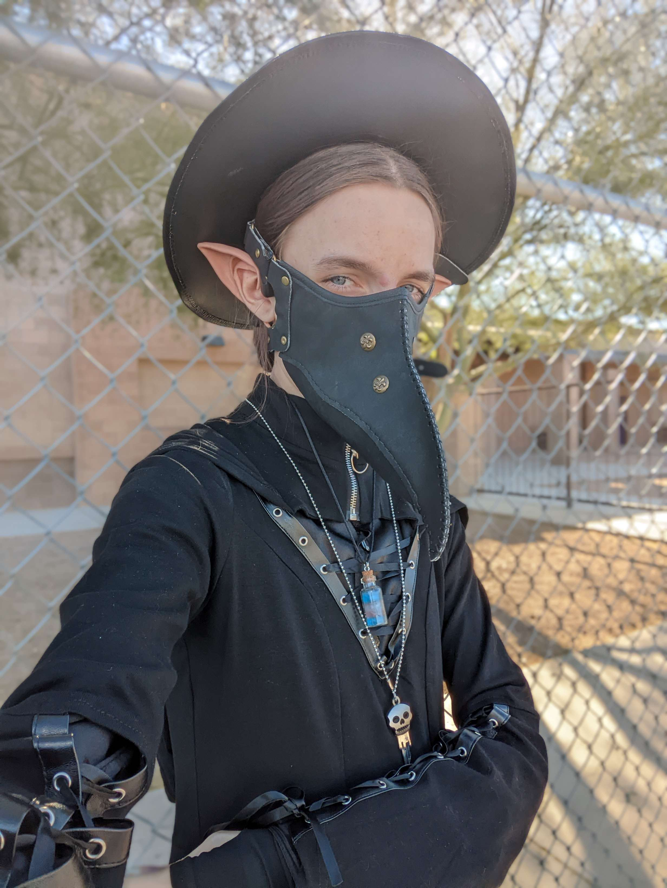

 My name is Hearth, and I'm a Digital Artist and Animator.
I'm experienced in Adobe Photoshop, Illustator, After Effects, as well as Krita, Clip Studio Paint, and Blender. My style is very sketchy, but I'm able to match to other styles well. One of my career goals is to make my own V-tuber model from the ground up, including rigging. I got interested in art after watching the anime "New Game!!" where the MC becomes an indie game modeler. The passion and romantization of the industry is what made me enamored by the prospect of becoming an animator.
You can see some of my art on twitter @kly50513710 I also have a Bluesky, if anyone even uses that. psychie.bsky.social